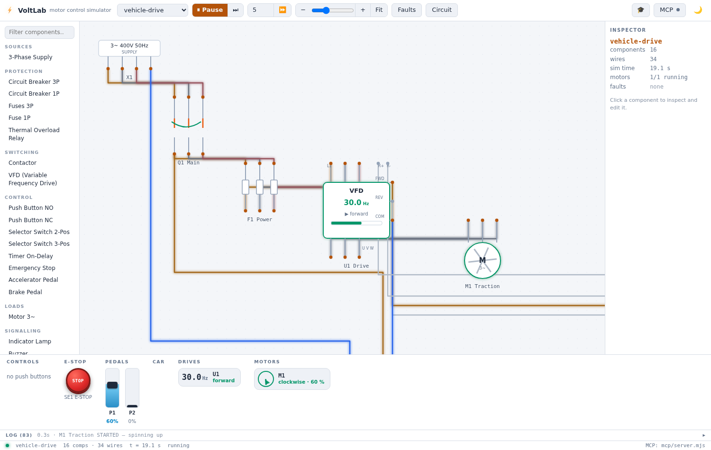

Motor control circuit simulator
Wire it. Run it. Break it.


Wire it. Run it. Break it.
Let an agent drive it.
VoltLab simulates electromechanical motor-control circuits — DOL starters, interlocks, reversing starters, a 10-story relay elevator, an electric vehicle drive — with a real per-tick electrical solver and IEC-style schematics. Drive them like machines: accelerator & brake pedals, a VFD with frequency ramps, e-stop mushrooms, car operating panels. And because it speaks MCP, an LLM agent can build, wire, fault and document every circuit for you.
